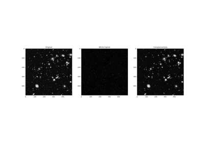
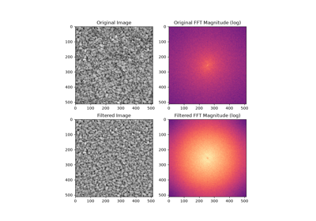

Filtering and restoration#

Removing small objects in grayscale images with a top hat filter
Removing small objects in grayscale images with a top hat filter
Image Deconvolution



Band-pass filtering by Difference of Gaussians
Band-pass filtering by Difference of Gaussians


Full tutorial on calibrating Denoisers Using J-Invariance
Full tutorial on calibrating Denoisers Using J-Invariance